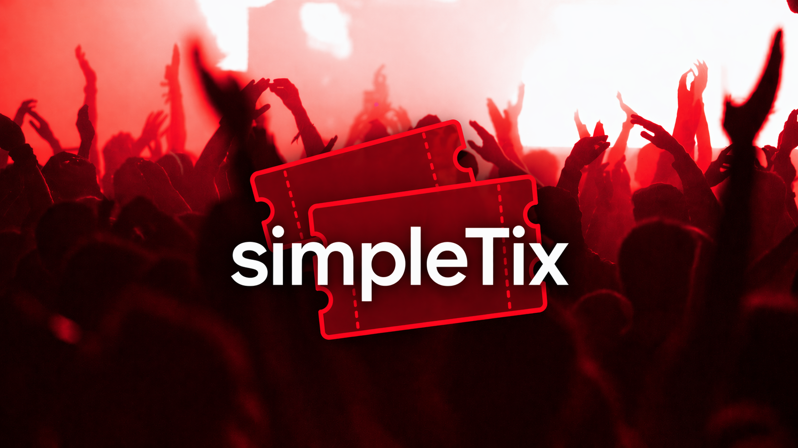

SimpleTix - An Event Ticketing Web Application
Django · PostgreSQL · JavaScript · AWS
Within a team of 5 engineers, and under the guidance of an engineering manager at Google, we built a full-stack web application for creating, managing, and browsing events, with a focus on structured data handling and usability. Developed both frontend and backend components, integrating dynamic search and database-driven functionality to support a scalable and reliable system.